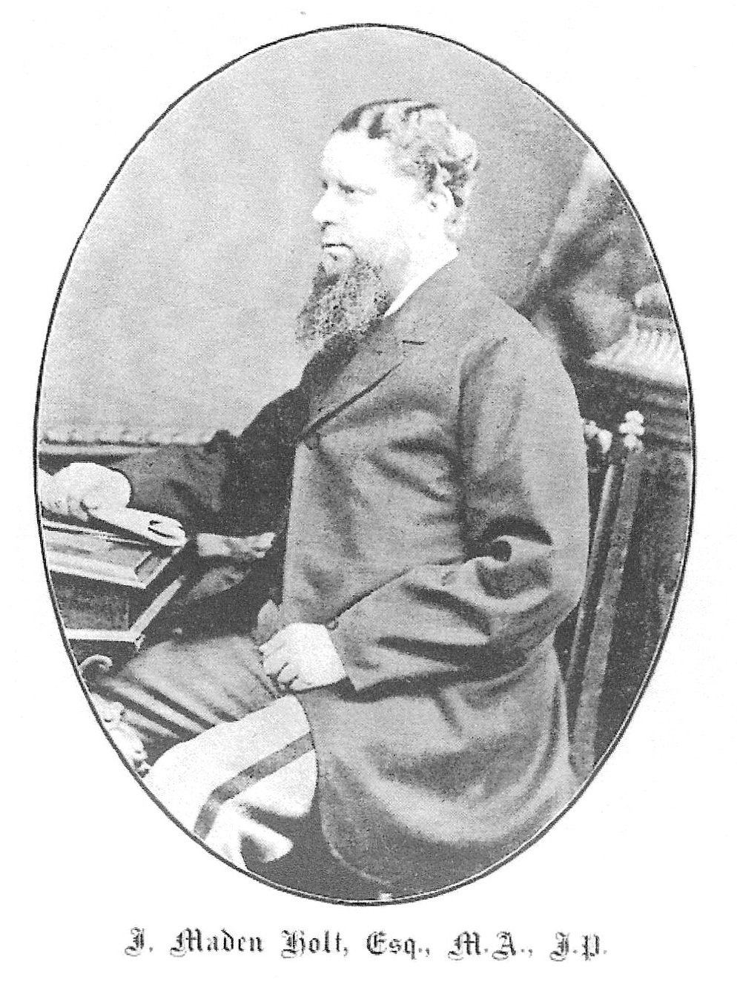

James Maden Holt M.A, J.P.
James Maden Holt was the son of John Holt (1804–1856). He was born on 18 October 1829 and died on 18 September 1911. James Maden Holt married in 1870 to Anna, daughter of the Rev. John Haworth of Penistone, Yorks. On the death of James Maden Holt he bequeathed Stubbylee Hall and its grounds to Bacup.
Arms: Arg on a bend, engrailed, as, three fleurs-de-lis, of the first
Crest: A dexter arm embowed in armour, ppr. garnished, or, holding in the gauntlet a pheon, as
Seat: Stubbylee, Bacup near Manchester
He obtained his B.A. at Christ Church, Oxford in 1853 and his M.A. in 1855.
He qualified as Justice of the Peace for Lancashire on 5 April 1858.
He was a member of the Local Board of Health for the District of Bacup, 1863–1868.
James Maden Holt, J.P. for the County of Lancaster and M.P. for North East Lancashire (1868–1880), was the only son of John Holt of Stubbylee near Bacup, by Judith, third daughter of James Maden of Greens House near Bacup. In 1868 he became the first Bacup‑born local MP when the new North‑East Lancashire constituency was formed, devoting his maiden speech to the folly of disestablishing the Protestant Church in Ireland.
He held the seat in the General Election of 1874 against the challenge of the Marquis of Hartington, a member of the Cavendish family of Chatsworth Park. At the request of the council of the Church Association he introduced the Ecclesiastical Offences Bill, designed to facilitate the suppression of extravagances in ritual.
Approaching the 1880 General Election, James Maden Holt announced to his friends and supporters his desire to retire on the grounds of failing health. Mr Holt was not a frequent speaker during his parliamentary career, but he took part in discussions especially affecting Protestantism.

From Lancashire Leader : Social and Political pub. 1895
James Maden Holt remained a rigid Protestant all his life.
His family
James Maden of Greens (1766–1849) was a cotton mill‑owner and philanthropist. He owned 30 acres of land and at least two coal pits. His family line dates back to at least 1703 when James Maydin of Broadclough was one of the Overseers of the Poor. James Maden was also a staunch evangelical, and one of a group of five clergy and five laymen who initiated a Bacup branch of the British and Foreign Bible Society.
John Holt of Stubbylee married the third daughter of James Maden, Judith, on 25 June 1828. The Holt estates originally covered all the south side of the River Irwell from Cowpe across Brandwood Moor to Shawforth and thence to Sharneyford.
John Holt, whose mother was Anne Heyworth of Greensnook Hall, became Bacup’s second magistrate (and the first for the Salford Hundred) in April 1838. As an ex‑officio member of the Poor Law Guardians, he was a target for the resentment felt by unemployed handloom weavers at government attempts to eliminate outdoor relief.
One dark February evening in 1843 a shot was fired, probably intended for him. The would‑be assassin was never found, despite a £200 reward being offered for the arrest and conviction. John Holt was unharmed, but his wife Judith, already ill, was terrified and died of influenza three weeks later at the age of only 38.
John Holt died on 26 December 1856, leaving two children: James Maden Holt and Emily Sarah Holt. Emily Sarah Holt was a prolific writer of novels with an evangelical bias, set in times of religious crisis.
James Maden Holt Esq. M.A. J.P., a justice of the Peace and Philanthropist, sat in the House of Commons from 1868 for 12 years as an Independent Conservative. For more details about the life of James Maden Holt click here.